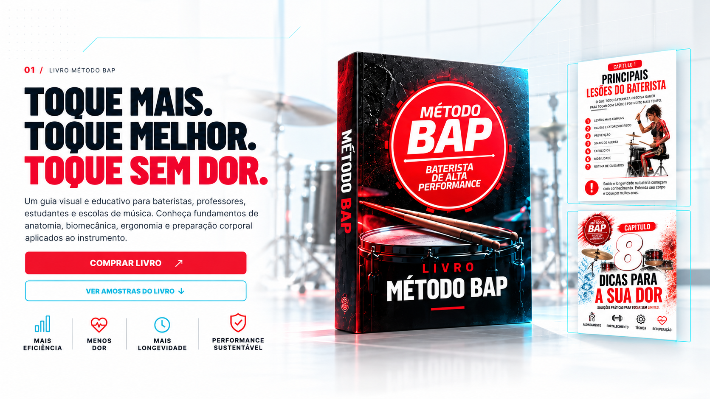
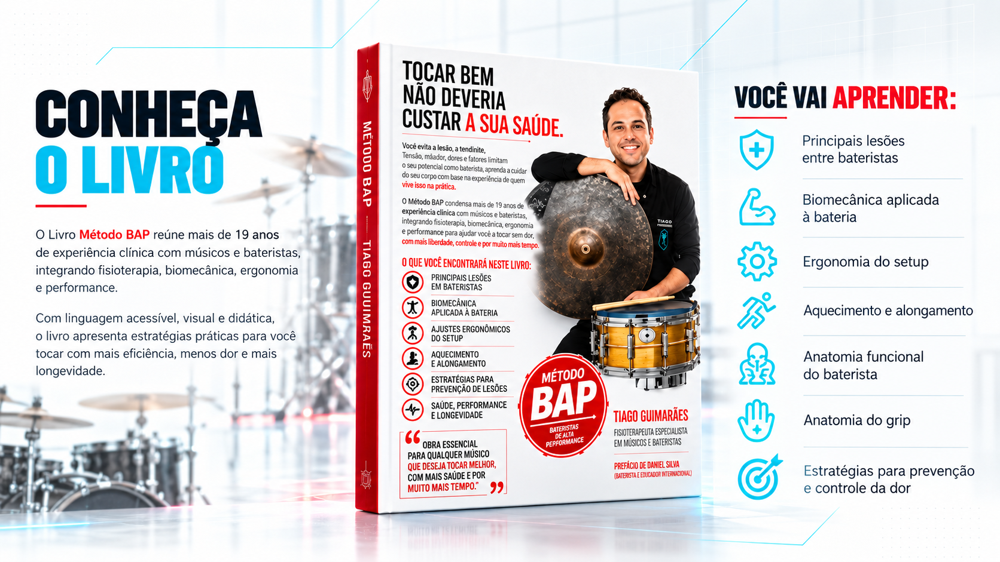
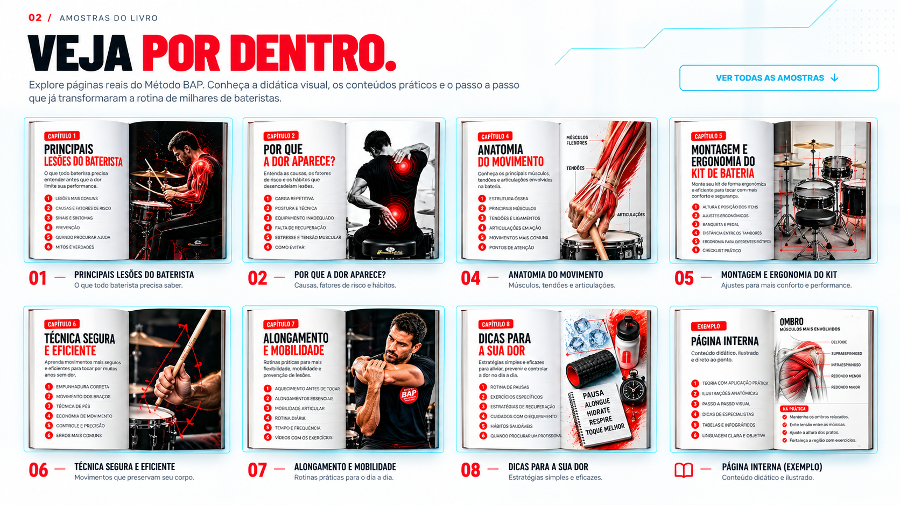
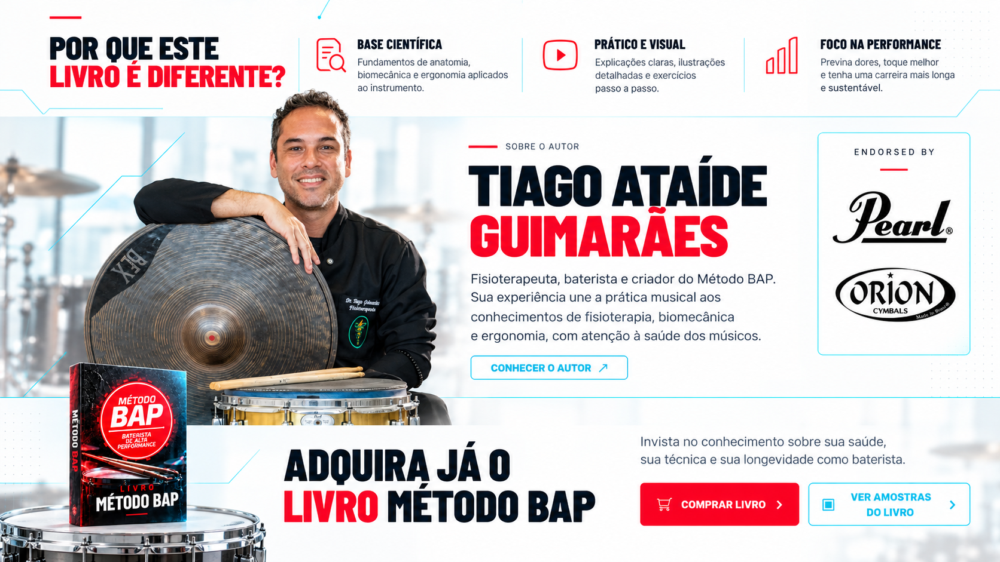

BATERISTA
DE ALTA
PERFORMANCE
INÍCIO
O MÉTODO
CURSO
VÍDEOS
LIVRO
SOBRE
LOJA
CONTATO
Instagram
Facebook
YouTube
☰
Início
O Método
Curso
Vídeos
Livro
Sobre
Loja
Contato
Instagram
Facebook
YouTube

⤢
AMPLIAR

⤢
AMPLIAR
⤢
AMPLIAR

⤢
AMPLIAR

⤢
AMPLIAR
⌂
Início
◎
Método
▤
Curso
▷
Vídeos
▣
Loja
MÉTODO BAP / PRÉVIA DO LIVRO
✕
Fechar
‹
›
✕ Fechar